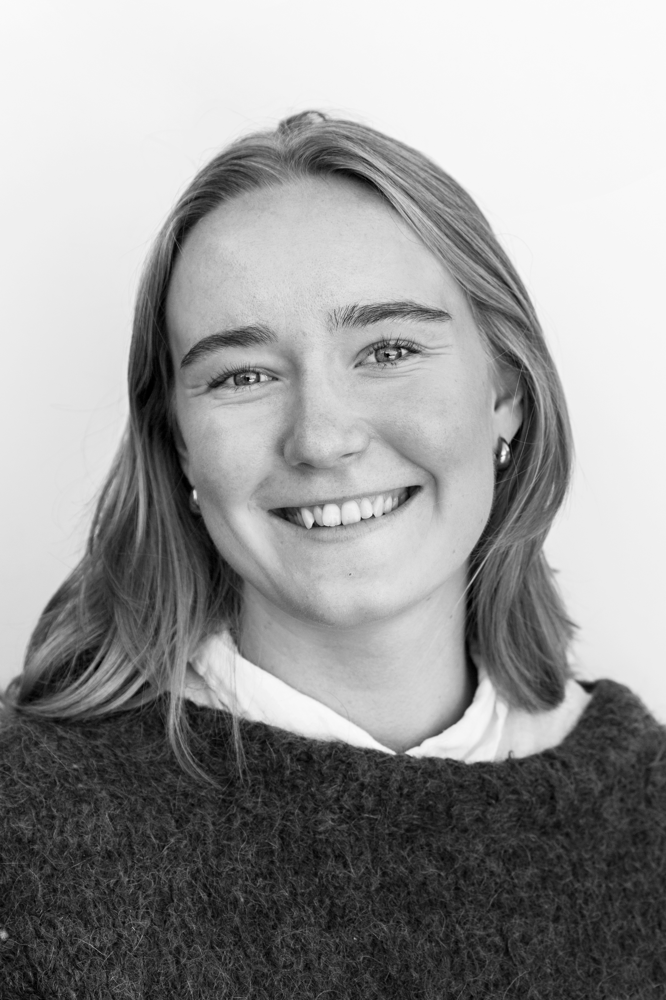
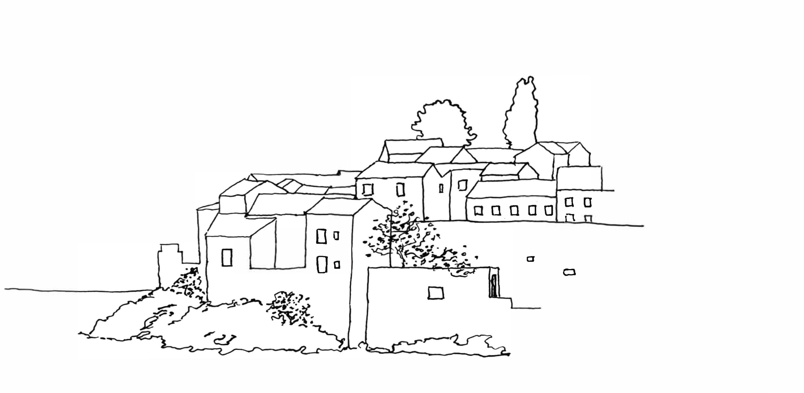

Vilde Helle Viken
Arkitekturstudent
Jeg er arkitektstudent ved NTNU med utvekslingserfaring fra TU Graz, og er særlig engasjert i transformasjon og komplekse bygninger. Ved siden av studiene har jeg blant annet erfaring som praktikant i LPO Arkitekter, snekker og tillitsvalgt.
Her vises et utvalg av arbeidet mitt. Ta gjerne kontakt for en samtale, eller for å se en fullstendig versjon.
Personalia
Utdanning
Sivilarkitekt, NTNU
Norges teknisk og naturvitenskapelige universitet, Trondheim
Utveksling, Østerrike
Technische Universität, Graz
- Institutt for trekonstruksjoner
- Institutt for energidesign
- Institutt for landskap
Kybernetikk og Robotikk, NTNU
Norges teknisk og naturvitenskapelige universitet, Trondheim
Erfaring
Praktikant, LPO Arkitekter
Heltid · Oslo
Ett år med prosjekteringserfaring hos et av Norges største arkitektkontor. Her opparbeidet jeg meg praktisk forståelse for bransjen gjennom flere konkurranser, mulighetsstudier og parallelloppdrag i både store og små team.
Håndtverker, Tømrermester Trond Myhre AS
Sesong · Bærum
Praktisk erfaring som snekker på byggeplass gjennom flere rehabiliteringsprosjekter. Her fikk jeg forståelse for byggbarhet og god innsikt i håndverkeres arbeidsmetoder og i samarbeidet mellom ulike aktører på et byggeprosjekt.
Tillitsvalgt, Fakultetet for Arkitektur og Design, NTNU
Deltid · Trondheim
Tillitsvalgt for 1500 studenter ved Fakultet for arkitektur og design, NTNU. Fungerte som bindeledd mellom studenter og fakultetsledelsen, og bidro til å fremme studentenes interesser i fakultetets beslutninger. Bygget erfaring med organisasjonsarbeid, forhandling og ansvar i stor skala.
Hjemmesykepleien, Bærum kommune
Sesong · Bærum
Barista, Steam Kaffebar CC-Vest
Deltid · Oslo
Servitør, Platebaren Restaurant
Sesong · Grimstad
Langrennstrener, Haslum IL
Deltid · Bærum
Programvare
Rhino · Archicad · Revit · Adobe-pakken · Grasshopper · 3D-print · Q-GIS · Grunnkunnskaper i Python og C++
Verv
Språk
Norsk (morsmål) · Engelsk (flytende) · Tysk (grunnleggende)
